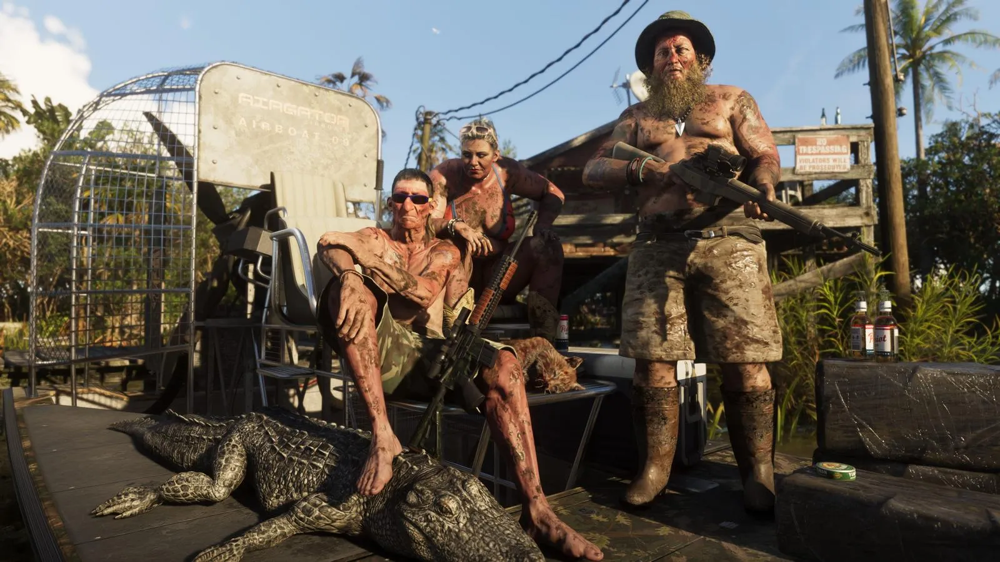

Swamped: прохождение миссии GTA 6
Опубликовано:

Коротко
- Брайан наконец разбирается с Kingfishers сам — и тащит с собой Джейсона. Встреча в лагере оказывается засадой, банда увозит жену Брайана Лори, и дальше погоня на вертолёте и на аэролодке с прыжком с борта на борт. Самая сложная миссия первой главы.
- Глава 1, миссия 17 из 22. Играем за: Джейсон.
- Награда: нет.
Миссия коротко
| Глава | 1. Just Like Paradise |
| Номер в сюжете | 17 |
| Играем за | Джейсон |
| Кто даёт | Брайан Хедер |
| Где начинается | пристань Брайана → лагерь Kingfishers на северо-западе округа Мариана |
| Условие | Day Release, Clear Skies и Building a Life |
| Награда | нет |
| Переиграть | нельзя — сохраняйтесь вручную |
Где начинается
Прохождение по шагам
- Войдите в подсобку пристани Брайана — после Day Release, Clear Skies и Building a Life.
- Садитесь в пикап Брайана и езжайте в лагерь Kingfishers на северо-западе округа Мариана — дорога долгая. У ворот поговорите с бандитом и идите за Брайаном пешком.
- Осмотрите свинарник — зажмите L2 + △ (LT + Y).
- Отбейтесь от засады и идите за Брайаном (зелёная точка на мини-карте). Банда хватает Лори и увозит на лодке.
- Вертолёт. Перебейте Kingfishers у вертолёта слева, садитесь и взлетайте (зажать R2 / RT). Летите за лодкой и стреляйте по врагам на земле, прикрывая Лори.
- Пересадка на аэролодку. Лори всё равно перегрузят на другую лодку — Джейсон прыгает с вертолёта и продолжает погоню по протокам.
- Прыжок на лодку. Подведите лодку вплотную к борту цели и зажмите □ (X). Если далеко — прыжка не будет.
- Добейте врага быстрыми нажатиями □ (X). Дальше — ролики.
Советы
- Подходите к борту быстро и вплотную: огонь врагов может разбить двигатель — тогда откат к чекпойнту.
- Будьте готовы к нескольким попыткам — этот кусок сложно пройти с первого раза.
- Дома расскажите Лусии о решении Брайана — это поднимает отношения.
Подробности и секреты
- Лори — жена Брайана; как бы вы ни стреляли с вертолёта, бандит всё равно перетащит её на другую лодку (wiki.eso-ui).
- После миссии Брайан уходит на покой — об этом можно рассказать Лусии (wiki.eso-ui, MetaForge).
- По данным Rare Thief, вертолёт в миссии — Nagasaki Sea Sparrow, а лагерь — Big Pine у Bogwood Road.
Что можно пропустить
Не пропустите: разговор с Лусией дома после миссии — плюс к отношениям.
Частые вопросы
Как запрыгнуть на лодку в Swamped?
Подойти вплотную к борту и зажать □ (X).
Почему Swamped так сложно пройти?
Враги стреляют по вашему двигателю — подходите к лодке быстро и вплотную.
Где вертолёт в Swamped?
Слева в лагере Kingfishers — сначала перебейте бандитов рядом с ним.
Источники: PowerPyx, «GTA 6 Swamped Walkthrough», 19.11.2026; PC Gamer, «GTA 6 mission list», 19.11.2026; GTABase, space4games, Rare Thief, Game8, Beebom, MetaForge, wiki.eso-ui, TheDroidGuy, gamingpromax — Swamped, 18–28.11.2026. Кнопки указаны для PS5, в скобках — Xbox. Названия миссий — как в английской версии игры.